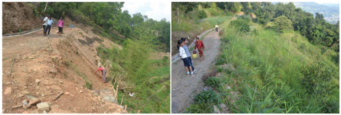

This lecture provides an overview of the process of decision-making when planning nature-based solutions. This lecture also introduces the common tools that can be used in decision-making processes. Particularly, this lecture discussed the uncertainty in the process, and how adaptive management and evidence-based decision-making can help to solve that. A case study demonstrating the concepts is presented.
Understand what the key considerations are when planning nature-based solutions
Learn how active adaptive management and evidenced-based decision-making can be applied when planning nature-based solutions
Obtain a basic understanding of how to account for uncertainty in the planning of nature-based solutions.
An effective decision-making mechanism should allow informed, transparent, and ethical decisions towards the sustainable implementation of nature-based solutions. It should be evidence-based and able to effectively connect stakeholders, policy makers, and scientists at different levels (local, regional-level, country-level, and international). The Millennium Ecosystem Assessment has identified the following elements to be critical in improving decision-making processes in ecosystem management for human well-being (assessment 2005):
Use the best available information, including the value of marketed and nonmarketed ecosystem services
Ensure transparency and the effective and informed participation of important stakeholders
Recognise that not all values at stake can be quantified, and thus quantification can provide a false objectivity in decision processes
Strive for efficiency, but not at the expense of effectiveness
Consider equity and vulnerability in terms of the distribution of costs and benefits
Ensure accountability and provide for regular monitoring and evaluation
Consider cumulative and cross-scale effects and assess trade-offs across different ecosystem services.
In particular, emphasis should be placed on the following known barriers to the successful implementation of nature-based solutions (assessment 2005; Bauduceau et al. 2015):
Inappropriate institutional and governance arrangements, including the presence of corruption and weak systems of regulation and accountability
Market failures and the misalignment of economic incentives
Failure in representing the needs of the local communities, particularly those lacking political and economic power (such as women and indigenous groups)
Underinvestment in the development and diffusion of technologies that could increase the efficiency of ecosystem services and reduce the harmful impacts
Insufficient knowledge and poor use of knowledge on ecosystem management that can enhance benefits from these services while conserving resources
Lack of information on the value of nonmarketed ecosystem services and the linkage between these services and human well-being.
There are many tools that can be used to assist decision-making concerning ecosystems and their services at a variety of scales, including global, sub-global, and local (see Table 18.1.1) (assessment 2005):
Deliberative tools: Tools that facilitate transparency and stakeholder participation, including neighborhood forums, citizens’ juries, community issues groups, consensus conferences, electronic democracy, focus groups, issue forums, and ecosystem service user forums
Information-gathering tools: Tools that help with collection of data and opinions, such as citizens’ research panels, deliberative opinion polls, environmental impact assessments, participatory rural appraisal, and rapid rural appraisal
Planning tools: Tools that help to evaluate different potential policy options, such as consensus participation, cost-benefit analysis, multi-criteria analysis, participatory learning and action, stakeholder decision analysis, trade-off analysis, and visioning exercises.
Particularly, there are five planning tools that are commonly used in assessing optimisation, equity, thresholds, and uncertainty of decisions for nature-based solution planning:
Cost-benefit analysis: Evaluation of the strengths and weaknesses of different options for the determination of the best option for achieving benefits while preserving cost
Risk assessment: Identification and analysis of (future) risk on the system and making judgments based on the tolerability of the risk
Multi-criteria analysis: Explicitly evaluating multiple conflicting criteria in decision-making
Precautionary principle: Understanding of the potential negative impact of a decision when extensive scientific knowledge on the matter is lacking
Vulnerability analysis: Definition, identification, classification, and prioritisation of vulnerable elements in the system.
Table 18.1.1: Applicability of decision support methods and frameworks (assessment 2005)
| Method | Optimisation | Equity | Thresholds | Uncertainty |
|---|---|---|---|---|
| Cost-benefit analysis | + | + | - | + |
| Risk assessment | + | + | ++ | ++ |
| Multi-criteria analysis | ++ | + | + | + |
| Precautionary principle | + | + | ++ | ++ |
| Vulnerability analysis | + | + | ++ | + |
++: direct application of the method by design
+: possible application with modification or (in the case of uncertainty) the method has already been modified to handle uncertainty
–: weak but not impossible applicability with significant effort
Nature-based solutions should be factored into infrastructure and development planning from the outset, to ensure sustainable, resilient and climate-compatible development. Nevertheless, the integration of nature-based solutions in planning adds additional layers of uncertainty, including:
Resilience: Both nature-based solutions and the issues that they are addressing, such as flooding and urban heating, are influenced by climate change and evolve under uncertainty
Functional performance: Predicting nature-based solutions performance can be imprecise (compared to traditional grey infrastructure) due to their adaptive nature and the uncertainties surrounding their future conditions that rely on long-term maintenance
Temporal factors: Many nature-based solutions take time to be implemented and achieve their full potential for service delivery, and some have seasonal functionality. The delays to benefit accrual means cost-benefit ratios can vary over time
Unforeseen consequences: Interconnectedness of nature means actions in one area can impact elsewhere in the system, but these are not always understood
Governance: Managing nature-based solutions under shifting social, economic, and political conditions is challenging, particularly where land rights are unclear.
Active adaptive management can be a useful tool for reducing uncertainty in ecosystem management decisions (assessment 2005). The term “active” adaptive management is used here to emphasise the key characteristic of the original concept (which is frequently and inappropriately used to mean“learning by doing”): the design of management programmes to test hypotheses about how components of an ecosystem function and interact and to thereby reduce uncertainty about the system more rapidly than would otherwise occur. Given the high levels of uncertainty surrounding coupled socioecological systems, the use of active adaptive management is often warranted.
Evidenced-based decision-making can address the uncertainty in nature-based solution implementation and provide communication among various stakeholders. It requires using evidence to answer three key issues (Bauduceau et al. 2015):
Is the proposed measure effective in addressing the problem? For example, how effective is tree planting in reducing air pollution? How does this differ between different tree species? How does this differ between different spacing patterns?
What are the most effective means of establishing and maintaining the green solution? For example, what is the success of the various means of establishing green roofs?
How does the effectiveness change with local conditions? Many will vary according to the climate, local ecology or societal variation.
The evidence should be assessed within a four-staged process:
The first stage should be a collation of the possible interventions, with the objective of being as comprehensive as possible. These should be detailed, for example, listing all the possible means of reducing flood risk through changes in land management.
The interventions need to be prioritised according to the likelihood of being implemented, for example, those that relate to urban environments are likely to be considered a priority.
The published literature needs to be reviewed in a systematic and unbiased manner with the relevance and quality of the evidence assessed. The extent to which local environmental or social conditions modifies effectiveness needs to be determined, so it is possible to produce local solutions to local conditions.
The results should be synthesised and presented to practitioners in a manner that can be used readily by a wide range of individuals, for example through existing websites.
This study presents the implementation of eco-safe roads in Nepal through a science-practice and policy approach (Monty et al. 2017). Landslides are a natural feature in Nepal (as shown in mini-lecture 16.3). However, some of the many community-built rural roads are in landslide-prone areas and were built without proper technical guidance. These roads are therefore prone to collapse, triggering landslides and accelerating erosion rates, directly affecting economic development and increasing vulnerability.
The project established three demonstration sites of eco-roads (Figure 18.1.1), which use ecosystem-based, locally adapted bioengineering methods to increase the stability of landslide-prone rural roads. Its main operational approach includes:
Vulnerability and capacity assessment: Using a combination of qualitative and quantitative data collection methods including geological assessments, remote sensing, and semi-structured interviews to collect geophysical and demo-economic information.
Scientific research: Biophysical research to establish rhizotrons and automated weather stations and to measure erosion rates. Socio-economic research was carried out through cost-benefit analysis to compare conventional roads with the eco-safe roads.
Capacity building and awareness-raising: Various training, cross-learning field visits, and workshops and results dissemination thorough mass media are conducted to promote knowledge exchange and awareness about eco-engineering.
The project has successfully demonstrated that eco-safe roads are cost-effective and locally-adapted solutions. All the local communities at the demonstration sites are actively seeking funding to extend the bio-engineering works. The project’s scientific research has generated many scientific publications, and generated profound policy influence. For example, Eco-Disaster Risk Reduction has now been integrated into Nepal’s National Strategic Framework for Nature Conservation (2015-2030). The success of the project shows that (1) rigorous scientific findings can strengthen policy arguments, and (2) participation of the local communities and integration of local livelihood benefits are critical in implementing nature-based solutions.

Figure 18.1.1: Demonstration site Gharelu before interventions (left) after interventions (right) (Monty et al. 2017)
This lecture introduces the process of decision-making when planning nature-based solutions and the common tools that can be used in the decision-making process. Particularly, this lecture discussed the uncertainly in implementing nature-based solutions, and how adaptive management and evidence-based decision-making can help to cope with that. A case study of constructing eco-roads in Nepal was presented to demonstrate the concepts.